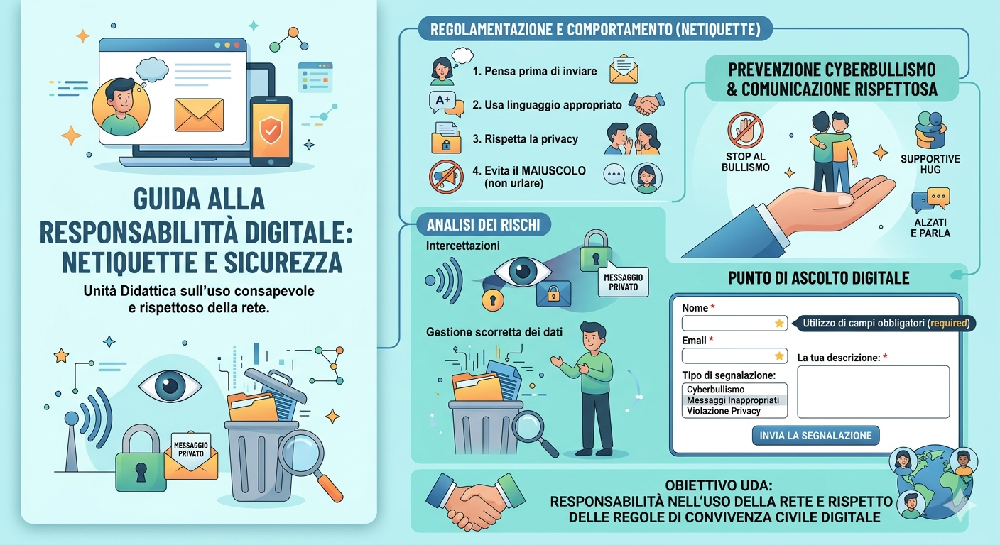

Che cosa è la comunicazione digitale
Le Caratteristiche Principali
La comunicazione digitale si distingue da quella tradizionale per alcuni tratti fondamentali:
Multimedialità: Non usiamo solo il testo, ma integriamo immagini, video, audio, emoji e GIF, rendendo il messaggio
stratificato.
Asincronicità: A differenza di una conversazione faccia a faccia, non richiede che i partecipanti siano presenti
contemporaneamente (pensa alle email o ai messaggi WhatsApp).
Velocità e Portata: Un messaggio può raggiungere migliaia di persone in tutto il mondo in pochi millisecondi.
Persistenza: Gran parte di ciò che scriviamo online lascia una "traccia digitale" che può essere consultata anche a
distanza di anni.

Punti chiave
- La "Scomparsa" di Spazio e Tempo: la barriera geografica è azzerata. Puoi collaborare con qualcuno
dall'altra parte del mondo istantaneamente. Inoltre, la distinzione tra sincrono (chat) e asincrono (email) permette
una flessibilità che la comunicazione fisica non ha.
- Multimedialità e Ipertestualità: Online non comunichiamo solo a parole. Il messaggio è un mix di: testo
(spesso breve e diretto), visual (immagini, video, meme), link (che permettono di approfondire o saltare da un
concetto all'altro).
- La Ricerca del Tono (Emoji e Netiquette): poiché online mancano il tono della voce e l'espressione del
viso, utilizziamo sostituti artificiali, ad esempio Emoji e GIF: Servono a evitare malintesi (un "ok" può sembrare
freddo, un "ok 😊" è amichevole).
Netiquette: L'insieme di regole di comportamento (es. non scrivere in grassetto o maiuscolo senza motivo, non
spammare).
- Tracciabilità e Permanenza: a differenza di una chiacchierata al bar, quello che scrivi online resta. La
"scia digitale" ha un impatto enorme sulla reputazione personale e professionale: una volta inviato o pubblicato, un
contenuto è difficilmente cancellabile del tutto.
- Frammentazione dell'Attenzione: siamo costantemente bombardati da notifiche. Per questo la comunicazione
online efficace deve essere:
Scansionabile: Testi divisi in paragrafi o punti elenco (proprio come questo!).
Concisa: Arrivare al punto velocemente prima che l'utente passi al contenuto successivo.
In sintesi: La comunicazione online è uno strumento potentissimo che richiede però una maggiore responsabilità e una
capacità di sintesi superiore rispetto a quella tradizionale.